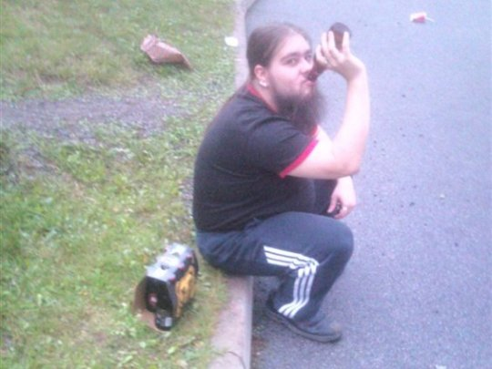

Kuten ehkä olettaa saaataa niin tietotekniikka alaa opiskelevana myös harrasteet liittyvät vahvasti alaan
Sekin varmaan on aika oletettavaa, että mieslapsella se ykkösharraste on pelaaminen
Satunnaisesti menee lähes kaikki genret mutta lähinnä sydäntä on vanhemmat strategiapelit.
Mainittakoon näistä AoE2 ja HoMM3
Toinen harraste, johon on upotettu lukemattoman suuri määrä tunteja on ylein en internet- ja
lautakulttuurin sekä erittäin huonon huumorin harrastamien
Sekä kuten jokaien itseään kunnioittava mieslapsi myös olen kiinnostunut kaikesta tekniikasta
ja elektroniikasta. Tuleekin siis räpellettyä varallisuuden sallimussa rajoissa kaikkenlaisten tietotekniikkaan,
äänentoistoon yms liittyvien teknisten laitteiden parissa. Opiskelun vuoksi sormia ei pääse öljyyn sotkemaan sillä autoa ei ole vara pitää
Unohtamatta kuitenkaan sitä teekkariopiskelijan kaikista rakkainta harrastetta
Takaisin etusivulle